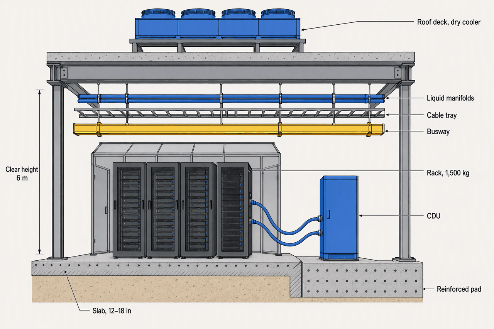
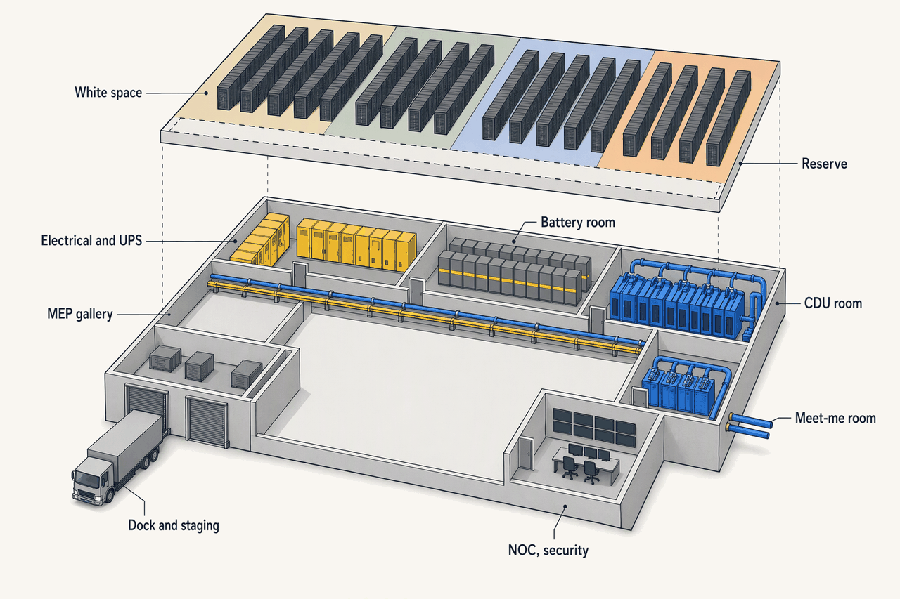
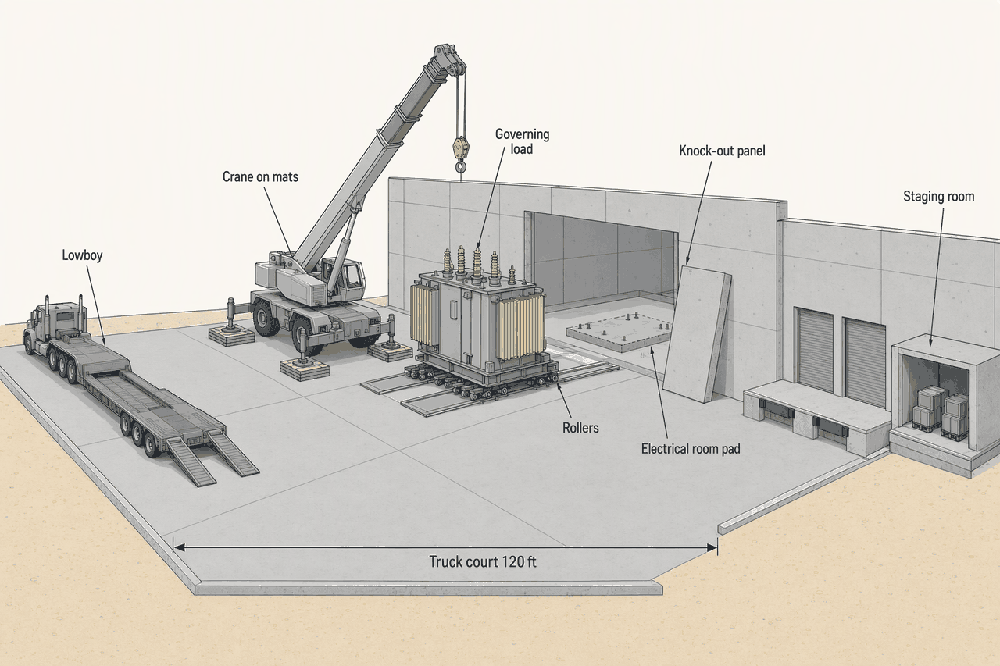

Building and Physical Infrastructure
Deep detail and sources: the appendix for this topic. Short version: sixty words. The research report this chapter was distilled from.
Topic 3 found the land and the power. This chapter is the box that goes on it: shell, slab, rooms, doors and roof. A tenth to a sixth of the money, it paces every trade behind it, and its few irreversible numbers are bought for all 40 MW on day one, because a 1,500 kg rack cannot be retrofitted into a floor built for 700.
- 10–15%Share of construction cost that is the shell; Topic 1's teardown says 14%Cheap, and every trade waits for it
- ~1,360 / ~1,500 kgGB200 NVL72 rack, dry and with coolant, on 0.64 m²About 2,100 kg/m² on its footprint, twice a legacy raised floor's rating
- 100 psfASCE 7-22 minimum for a computer floorAI halls specify 250–400+; the code is a floor, not a target
- 12–18 inData-hall slab, against 4–6 in for an officeConcrete all the way down, rebar at 6–8 in centres
- 6–9 mFloor-to-floor now common in new AI hallsColo's 3.8–4.5 m is the barrier a liquid-cooled tenant hits
- 45–55 dBATypical night limit at the property lineFans and transformers run 60–80 unmitigated
The box
- Electrical54Switchgear, UPS, generators, distribution
- Mechanical22Chillers, air handling, pumps; 33 in a liquid-cooled build
- Core, shell and architectural14The building itself; 9 in a liquid-cooled build
- GC preliminaries and fees10Site management, overheads
The shell is the cheap part and the pacing part at once: about a sixth of the bill, but nothing inside it can start until it is dry. What moves its price is the site, not the racks (APX-building §1).
What moves the shell's $/sf
- Seismic zone: 8–15% on structure and mechanical in a high-seismic region.
- Soil: poor bearing forces piles or drilled shafts under the slab.
- Storey count and span: column-free bays and upper floors cost structure.
- Hardening: FM-grade decks, missile-rated openings, blast setbacks.
- Labour: union markets $140–200+ an hour against $65–95 in right-to-work states.
- JLL's 2026 shell-and-core figure of $11.3M/MW includes base power and cooling distribution, so it is not the same "shell" (verify).
| System | Speed | Bay | Hardening | Cost | Who favours it |
|---|---|---|---|---|---|
| Concrete tilt-up | Fast for a big single-storey box | 8–12 m | Good wind and ballistic mass | lowest $/sf | Sunbelt hyperscale and colo |
| Precast concrete | Fastest enclosure; 48 h cure against 28 days | 8–12 m | High; FM prefers concrete decks | moderate premium | Owners on tight schedules |
| Steel and IMP | 2–6 week erection | 12 m+ spans | Low mass; heavier deck for tornado | volatile with steel | Multi-storey, land-constrained metros |
| Hybrid and modular | Factory and site in parallel | Standard bays | Varies | premium per unit, saved in schedule | Hyperscaler repeat designs; Meta's tents the extreme |
The choice is regional and owner-driven more than technical. The reference campus takes tilt-up because it is a flat Sunbelt site with land to spare, and would take precast only to buy weeks (APX-building §2).
| Factor | Single-storey | Multi-storey |
|---|---|---|
| Land per MW | Most | Least; Brightray Macao plans 40 MW on 9,000 m² in five storeys (verify) |
| Floor structure | Slab-on-grade | Post-tensioned or composite floors, checked for vibration |
| Rigging | Grade doors and rollers | A freight lift sized to the heaviest unit (QTS, Northern Virginia) |
| Cooling | Horizontal | Convection across storeys; QTS fills quadrant by quadrant |
| Fuel storage | On grade | Lowest floor by rule (New York City) |
| Who builds it | Hyperscale box, Sunbelt colo | Land-constrained metros |
Multi-storey buys land and pays in structure, lifts and vertical cooling. At 120 acres the reference campus has no reason to pay (APX-building §3).

Busway on top, fiber and copper tray under it, liquid manifolds lowest. The stack hangs above the rack, which is why the hall needs two metres more air than a colo of ten years ago and a floor that is concrete all the way down.
What the floor carries
- code minimums (ASCE 7-22, UFC 3-301-01)100–150 psf
- legacy and new-build owner spec150–250 psf
- AI-hall spec250–400 psf
- reference AI pod, blended with CDUs400–500 psf
- ASCE 7-22 minimum100 psf
- UFC 3-301-01150 psf
- an 8 kW rack on its footprint170 psf
- a 15 kW rack230 psf
- a 40 kW rack300 psf
- Intel guidance, 2012350 psf
- GB200 NVL72 on its footprint435 psf
The code minimum is a floor, not a target. The 120 kW rack lands at four times ASCE's number and above every legacy raised floor, and Topic 2's day-one headroom is what makes 400 psf a design value rather than a retrofit (APX-building §4).
Rack weights, dated, and what the slab does with them
| Item | Number | What the slab does with it |
|---|---|---|
| ORv3 frame | 1,400 kg payload; 600/750 × 1,068 × 2,286 mm | The envelope the pod is designed to |
| GB200 NVL72 | ~1,360 kg dry, ~1,500 kg wet; 340 kg per caster | Four point loads on a few square inches each |
| GB300 | 135–142 kW; weight still climbing | Headroom, not a target |
| Legacy position | 500–750 kg; an empty rack ~300 lb | What a raised floor was rated for |
| Slab | 12–18 in, rebar at 6–8 in centres; 8,000–15,000 yd³ per hyperscale hall | Capacity follows subgrade stiffness (k-value), not bearing strength |
| Movement | 5–10 mm between pedestals; a 2 mm sag binds doors | Why floors are not run at their rating |
| Seismic | RC IV, Ip 1.5; anchorage from SDC C; AC156 | Rack maker supplies cabinet and kit; the building supplies embeds and stamped calculations |
Topic 2 carried the AI rack as "1,500 lb" from a vendor glossary. That is the weight of a legacy position; the AI rack is 1,500 kg, and a unit error of that size is exactly what a floor cannot forgive (APX-building §4). The liquid's own weight is APX-building §5.
Raised floor or slab
| Factor | Raised access floor | Slab, overhead everything |
|---|---|---|
| Best for | Legacy and retail colo; underfloor air and cable plenum | Hyperscale, high density, AI |
| Air path | Underfloor plenum supply | Room flooding, fan walls, containment |
| Power and cable | Under the floor | Busway and tray overhead |
| Density ceiling | Tiles ~250 kg each (Spheron, verify); understructure 1,200–1,500 kg/m² | Any; carries 1,500 kg racks directly |
| Seismic | Understructure needs bracing | Anchor straight to concrete |
| Cost | Higher: floor, ramps, bracing | Lower; saves vertical space |
| Liquid | Underfloor pipe possible, leak-exposed | Overhead or slab-level pipe with trays |
Slab with overhead everything is the 2025–26 default and the reference decision, for the whole hall including the 8 kW retail zone. Raised floor survives where tenants still want an underfloor plenum, and a legacy raised-floor hall is structurally the wrong building for Blackwell (APX-building §7).
The rooms
- White space32,000Four pod zones, network racks in the AI pods, 15–20% reserve strip inside
- Gray space32,000Electrical, UPS, battery and mechanical rooms
- CDU room and pipe gallery8,000With at least 50% growth room
- Dock, staging, NOC, security, support8,000Nothing unboxed on the revenue floor
Gray space is no longer smaller than white. Tier III with liquid pushes the ratio past 1:1, so the building is two and a half times its revenue floor. The 32,000 sf here is gross white space with containment, CDU rows and reserve, wider than Topic 2's net rack-and-aisle figure (verify; APX-building §8).
| Room | Holds | Code separation | Floor | Topic | Reference stance |
|---|---|---|---|---|---|
| White space | Racks; CDUs and network racks in the AI pods | NFPA 75 rated separation | 250–400 psf | 8 | Slab, overhead, 6 m clear |
| Electrical and UPS rooms | Switchgear, UPS, unit substations | NFPA 75/76 rated walls | ~250 psf | 5–6 | One long side, knock-outs to the yard |
| Battery room | Lithium-ion strings | NFPA 855: 600 kWh per fire enclosure, 3 ft spacing, 1–2 h barriers, not below grade, ≥1 CFM/sf, HMA first | ~1,000 psf | 5 | Sized by the fire code, not the engineer |
| Mechanical and CDU gallery | CDUs ~3 t each, pumps, headers | Leak trays and detection | Reinforced pads | 7 | ≥50% growth room, against the AI pods |
| Telecom entrance and meet-me | Carrier gear; space only | Two diverse entries | Ordinary | 9 | Opposite end from the dock |
| Dock and staging | Trailers, unboxing, caged storage | Outside the white space | Route load | 4 | Two dock doors, one grade door |
Topics 5 to 7 own the machines; this chapter owns their rooms. The battery room is the one where the fire code, not the engineer, sizes the walls, and which NFPA 855 edition binds depends on the IFC the AHJ adopted (APX-building §8).

Batteries and switchgear sit against the pods they feed, CDUs against the liquid rows, staging between the dock and the hall so nothing is unboxed on the revenue floor. The walk from truck to pad is short and never crosses a live row.
Dock to pad
- Highway permit; lowboy or SPMT (rigging contractor)
- a 100–200 t transformer or a 3 MW genset
- Truck court ≥120 ft; crane pad on mats (lift planner checks ground bearing)
- 90 t all-terrain for chillers, 190–275 t for the largest sets
- Dock door 9 × 10 ft or grade door 12 × 14 ft; leveler 45,000 lb (GC)
- racks and skids off the trailer
- Secure staging and unboxing room outside the white space (owner's security)
- clean, inventoried gear
- Corridor and knock-out panel designed to the governing envelope (structural engineer)
- the slab along the route carries the heaviest load
- Pad with embeds set to the skid supplier's tolerance (skid supplier, GC)
The route governs the slab more than the rack does. The floor is designed for the heaviest thing that ever rolls across it, before the equipment list exists, which is why the path is designed to an envelope and the walls get knock-out panels (APX-building §9).

The gear on the hook took two years to build and cannot be replaced, so the set is one engineered move. Rigging and dry-in are coupled milestones for that reason.
Fit-out is a logistics problem too
- Rack rollout is industrial: a Meta and AnyLogic model of rack receiving ran at 40% of target with a 3.7-day cycle per rack, and 92% at 2.2 days once the dock, staging, hall and lift chain was rebalanced. The chain, not the hall, is the bottleneck.
- Busway tap-offs cut per-rack deployment from days to hours against conduit pulls, which is why the AI pods are pre-provisioned with 120 kW busway (Topic 2).
- Substation-class transformers never enter the building; they stay in Topic 3's yard. What comes through the knock-outs is the per-hall unit substation, switchgear, UPS and gensets.
Hardened, roofed, quiet
| Threat | Measure | Standard | Who requires it | Reference stance |
|---|---|---|---|---|
| Seismic | RC IV, Ip 1.5; anchorage from SDC C | ASCE 7-22 Ch 13; AC156 | Code | Low site (Dallas SDS ≈ 0.1g, Phoenix similar, verify): brace and anchor, no isolation |
| Flood | Finished floor above the 500-year elevation plus freeboard; elevated pads | FEMA; ASCE 7 | Owner and insurer | Cheap because Topic 3 sited it well |
| Wind and roof uplift | Design speed and exposure; missile-rated openings; FM-approved concrete deck | ASCE 7-22; FM 1-28, ~1.15× ASCE | Insurer | FM-insured build, concrete deck |
| Hail | Impact-rated membrane and rooftop gear | FM 1-34; FM 4473 | Sunbelt; Dallas's alley | Kept as cheap insurance |
| Heat and dust | Thermal mass, high-albedo TPO, air and vapour barrier, filtration | ASHRAE 90.4, 90.1, IECC | Climate | The hazards that shape the envelope |
| Blast standoff | Setback, vehicle barriers | ISC; insurer | High-security tenants | Setback only |
In Phoenix the hazards that shape the envelope are heat, dust, wind and the insurer, not earthquakes. FM's data sheets become deal terms and run harder than code: 15% more uplift than ASCE and, in practice, no steel roof decks (APX-building §10; seismic in APX-building §6).
- night ordinance, typical45–55 dBA
- day ordinance, typical55–65 dBA
- cooling fans, transformers, switchgear, unmitigated60–80 dBA
- generator load test80–100 dBA
- reference night limit (proposed)45 dBA
- reference day limit; Prince William residential night55 dBA
- Prince William residential day60 dBA
- enclosed genset at 23 ft (Albemarle draft)70 dBA
Noise is a top-three opposition issue and a nuisance-litigation risk. The building's answer is setbacks that eat land and enclosures that eat capex, decided before the hearing, not after; the reference campus tests its generators in daylight only (APX-building §11).
How it sequences
- Site work and foundationsT+18–22Earthwork 4–12 weeks; slab, pads and embeds cast to the envelope; civil contractor
- Shell and dry-inT+21–26Panels up in weeks, knock-outs left open; shell contractor
- MEP rough-inT+24–3112–24 weeks, the densest stretch; MEP trades
- Equipment setT+30–344–12 weeks; OFE unit substations, switchgear, UPS and gensets through the knock-outs; riggers and skid suppliers
- Fit-out and early accessT+32–38Racks through the dock, busway tap-offs; tenants
- Substation transformer and energizationT+36–38Topic 3's clock, not the building's
- Commissioning L1–L5T+38–42Commonly 3–6 months; IST failures cost 3.8 months on average
Vertical construction is 12 to 24 months and the shell itself takes weeks of it. The money and the risk sit in the MEP stretch and the equipment set, when four parties share one floor and one door (APX-building §12).
What does a GB200 NVL72 weigh dry and wet, what floor load does it make on its footprint, and how does that compare with the ASCE 7-22 minimum and a legacy raised floor?
About 1,360 kg dry and 1,500 kg with coolant on 0.64 m², roughly 2,100 kg/m² or 435 psf, with 340 kg on each caster. ASCE 7-22's minimum is 100 psf, so the rack is more than four times it, and a legacy raised floor rated 1,200–1,500 kg/m² for 500–750 kg positions cannot carry it.
Raised floor or slab for the reference AI pods, and the three reasons the dump gives?
Slab with overhead everything. A slab carries 1,500 kg racks directly where tiles and understructure cannot; it anchors straight to concrete for seismic; and it keeps liquid pipe overhead or at slab level with trays instead of leak-exposed under a floor, while costing less and saving vertical space.
Roughly how big is the Hall 1 building, what share of it is white space, and why is gray space no longer the smaller half?
About 80,000 sf gross for 10 MW, of which about 32,000 sf, or 40%, is white space; gray space is another 32,000, with 8,000 each for the CDU gallery and for dock, staging and support. Tier III redundancy and liquid cooling push gray past 1:1 with white, so gross runs 2.5 times the revenue floor.
Name the steps of the rigging path and explain why the route, not the rack, governs the slab.
Highway permit and lowboy or SPMT; truck court and crane pad on mats; dock or grade door with leveler; secure staging outside the white space; corridor and knock-out panel; pad with embeds. Every metre of that route must carry the heaviest thing that ever rolls across it, a transformer or genset far heavier than any rack, and the list is not final at design, so the path is designed to a governing envelope.
Which hazards shape the reference hall's envelope in Phoenix, which one barely does, and who sets the wind number harder than code?
Heat, dust, wind uplift and hail shape it: thermal mass, high-albedo TPO, a continuous air and vapour barrier, filtration, an FM-approved concrete deck. Seismic barely does; the site is low-seismic, so Risk Category IV means anchorage, not isolation. The insurer sets wind harder than code: FM 1-28 runs about 15% above ASCE 7-22 and rejects steel decks.
From groundbreaking to ready-for-service, which stretch is the riskiest, who shares the floor during it, and what does the contract need at the shell-to-equipment interface?
MEP rough-in into the equipment set, roughly T+24 to T+34, when the MEP trades, the riggers, the skid suppliers and the tenants' early-access crews share one floor and one door. The contract needs a governing envelope for the path, pads and knock-outs, a named design-freeze-to-OEM-data gate, and dry-in as a dated milestone.